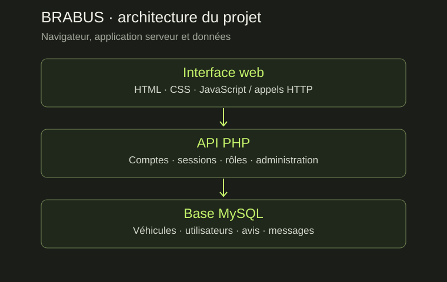

Le projet répond à la demande d’un client fictif : présenter les véhicules de la marque BRABUS à travers un site vitrine.
Le périmètre
Le cahier des charges comprend des fiches techniques, un formulaire de contact et un système d’authentification avec une page de connexion.
RÉALISATION / STAGE À LA CIREST · MAI–JUIN 2026
Du besoin au site dynamique
Ma contribution
Traduire la demande d’un client fictif en pages et fonctionnalités : présentation des modèles, fiches techniques, inscription, connexion, avis et administration des véhicules.
La préparation du projet comprend des personas, des user stories et une priorisation MoSCoW. Le cahier des charges est accessible depuis cette page.
Ce que j’ai appris
Distinguer le rôle du navigateur, des scripts PHP et de MySQL ; comprendre le chemin d’une requête et l’utilisation d’une session pour identifier l’utilisateur.
Une difficulté rencontrée : les chemins entre l’interface et l’API, notamment lors des redirections vers l’administration.

Architecture du projet complet. La démonstration GitHub Pages présente l’interface ; PHP et MySQL nécessitent un serveur adapté.
Compétences et éléments observables
Compétence travaillée
Réalisation
Élément à consulter
Travailler en mode projet
Analyse du besoin et définition des fonctionnalités
Cahier des charges
Développer la présence en ligne
Catalogue et fiches de véhicules
Démonstration du site
Concevoir et développer une solution applicative
Interface, API PHP et gestion des comptes
Archive du projet et guide d’installation
Gérer les données
Utilisateurs, véhicules, avis et messages
Scripts SQL dans l’archive
Sécurité : les points que je travaille
Les sessions et les rôles permettent de comprendre la différence entre authentification et autorisation. L’accès à une fonction d’administration doit être contrôlé côté serveur : masquer un bouton dans l’interface ne suffit pas.
Les requêtes préparées et l’échappement des contenus sont des mécanismes étudiés pour limiter les injections SQL et les XSS. Leur présence dans chaque point d’entrée doit être vérifiée lors de la revue du code ; cette présentation ne constitue pas un audit de sécurité.